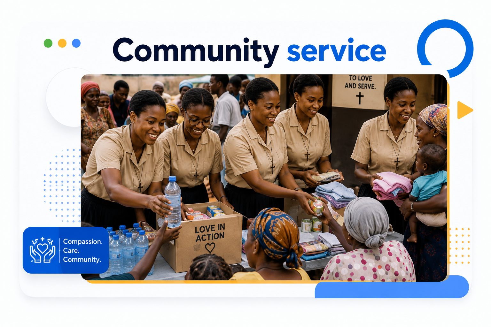

Your Generosity Can Bring Hope and Transform Lives
Every gift helps the Servite Mission Sisters continue their mission of compassion, education, healthcare, spiritual formation and service to vulnerable communities.
Make a DonationHelp Us Continue Christ’s Mission of Love and Service
Through your generosity, the Servite Mission Sisters are able to reach children, families, women and vulnerable communities with practical assistance, dignity, hope and spiritual care.

Education
Supporting children and young people with access to learning and development opportunities.
Healthcare
Providing health support, care and assistance to individuals and families in need.
Spiritual Formation
Helping people grow in faith through prayer, accompaniment and spiritual guidance.
Community Outreach
Promoting dignity, compassion and sustainable support within local communities.
Support Our Mission
Your contribution, regardless of its size, enables us to continue serving those who need compassion, care and hope.
God loves a cheerful giver.2 Corinthians 9:7
Choose Your Donation
Select an amount or enter your own amount in US dollars.
Giving a different amount? You can enter your donation amount securely at payment page.
Please enter a valid donation amount.
Suggested amounts open their matching Stripe checkout. For other amounts, Stripe will ask you to enter your chosen amount again. Your donation is not charged on this page.
You will be securely redirected to Stripe to complete your donation.
Thank you for helping us share Christ’s compassion, mercy and hope with others.
Every Donation Becomes an Act of Love
Your support allows us to respond to real needs while respecting the dignity of every person we serve.
Learning Support
Helping children and young people receive educational opportunities.
Health and Welfare
Supporting basic healthcare, wellbeing and humanitarian assistance.
Practical Assistance
Providing essential help to families and vulnerable individuals.
Faith and Mission
Supporting evangelization, spiritual formation and missionary service.
Frequently Asked Questions
Here are answers to some common questions about making an online donation.
Together, We Can Bring Hope to Those in Need
Your support strengthens our mission and helps us continue serving with faith, compassion and love.